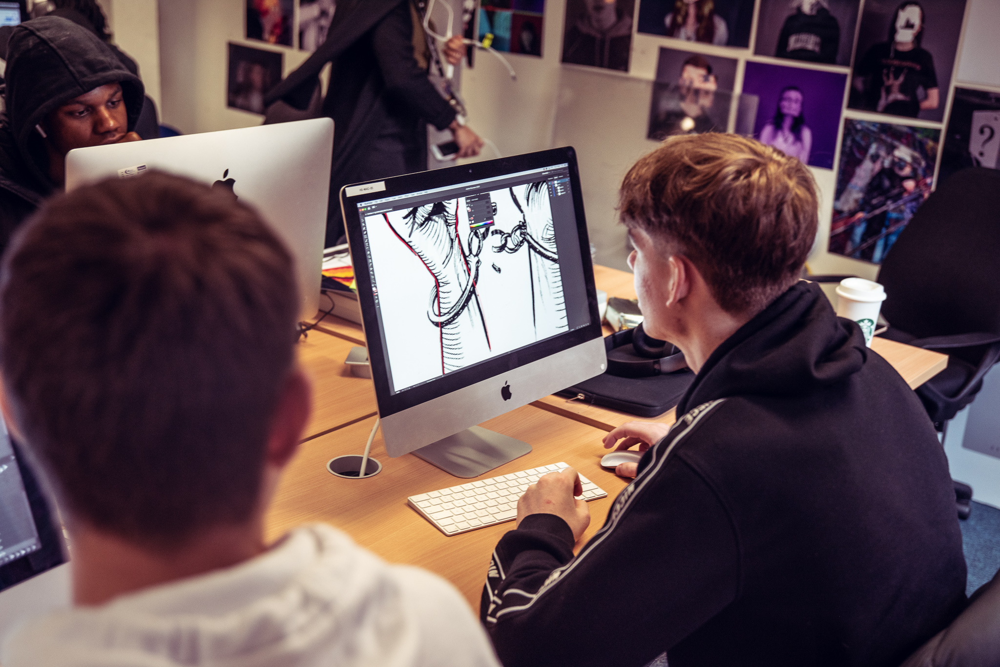
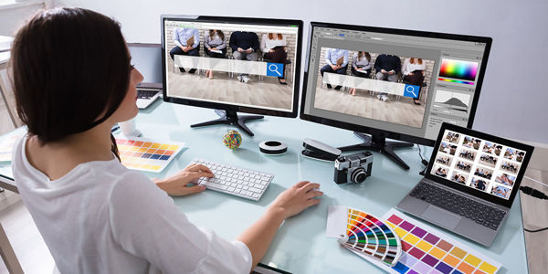

Here are the 6 key steps I will take to achieve my dream of becoming a Graphic Designer, with real examples:

1. Obtain a Relevant Qualification
Example: Study Degree in Graphic Design at UNIMAP or take short design courses on Coursera.
2. Complete an Internship
Example: Internship with a local design studio, creating posters and social media content.

3. Build a Strong Portfolio
Example: Showcase personal logo designs, posters, and mock-up UI designs on Behance or your own website.

4. Take Courses & Earn Certifications
Example: Earn Adobe Certified Professional in Photoshop or take a UI/UX bootcamp.

5. Build a Professional Network
Example: Attend design meetups, join online design communities like Dribbble or LinkedIn groups.
6. Apply for Jobs and Freelance Opportunities
Example: Apply to design agencies, freelance on platforms like Fiverr or Upwork, and build real-world experience.